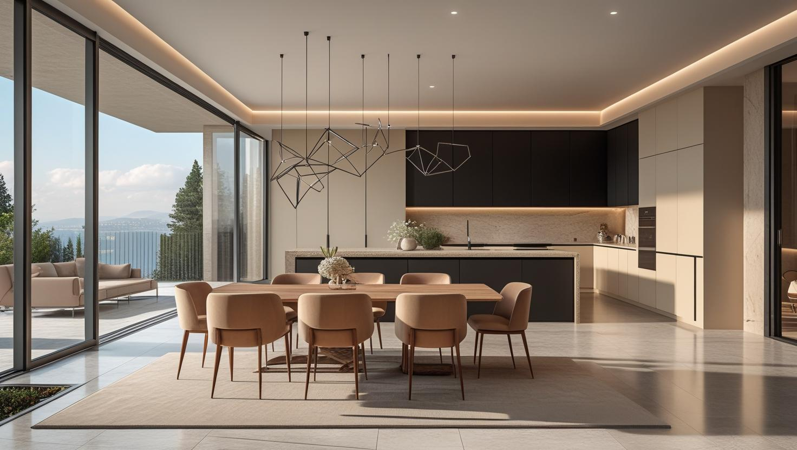
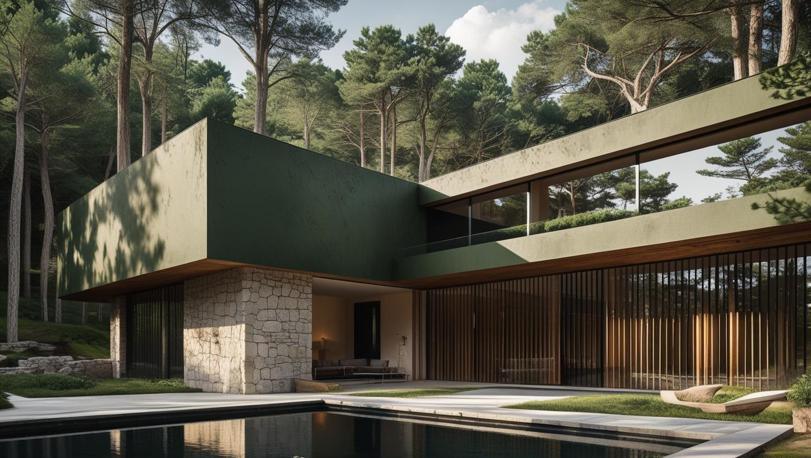
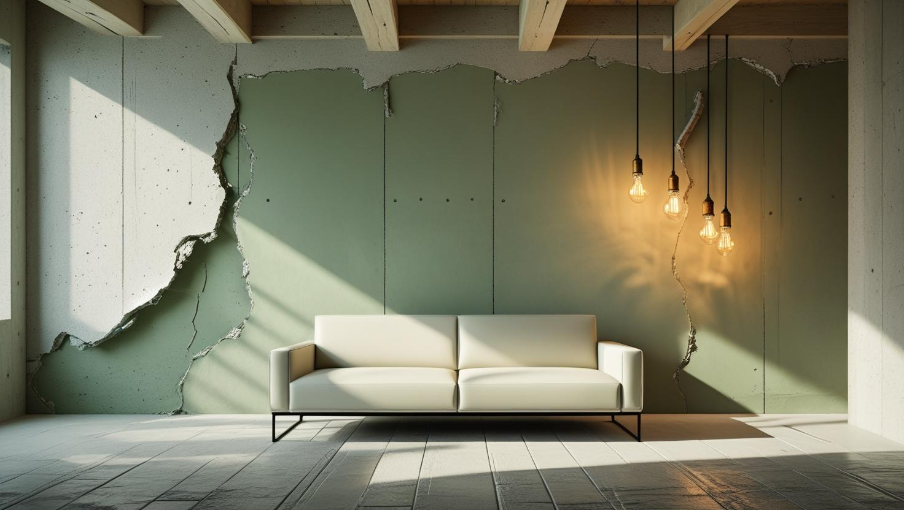

Ulus'un Prestijine Yakışır Boya Sanatı
Lüks konutlar, villalar ve modern yaşam alanları için kusursuz işçilik, premium malzemeler ve mutlak gizlilik prensibiyle hizmet veriyoruz.
Ulus'ta Boya Badana: Boğaz Manzaralı Konutlar ve Site Kuralları
Ulus boyacı talebi Beşiktaş'a bağlı bu semtin sitelere ve manzaralı konutlara dayanan yapısından geliyor. Konut stoğu bakımlı; duvar yüzeyleri çoğunlukla düzgün olduğu için ağır raspa nadiren gerekiyor.
İşin planını belirleyen kalemler yüzeyden çok çevre koşulları: site yönetimi izni, çalışma saatleri, yük asansörü ve yokuşlu sokaklarda malzeme taşıma.
Boğaz'a bakan cephelerde rüzgâr ve nem yükü, kuzeye bakan odalarda astar seçimini belirleyici hale getirebiliyor. Ulus boya ustası keşfinde bunu odalar bazında değerlendiriyoruz.
Ulus Profesyonel Boya Hizmetleri

Lüks Konut & Rezidans Boyama
Ulus'taki değerli konutunuzun mimari estetiğini, minimalist ve modern uygulamalarla yüceltiyoruz.
- Pürüzsüz duvar ve tavan bitişleri
- Minimalist tasarım renk paletleri
- İç mimari projelerine tam uyum
- Kokusuz, sağlıklı premium boyalar

Villa & Müstakil Ev Boyama
Geniş ve aydınlık villalarınız için iç ve dış mekan estetiğini bir bütün olarak ele alan çözümler sunuyoruz.
- İç-dış mekan renk harmonisi
- Dayanıklı ve şık dış cephe sistemleri
- Ahşap ve metal yüzeylerde uzmanlık
- Peyzaj ve çevreyle uyumlu yaklaşım

İç Mimar Proje Uygulamaları
İç mimarların ve tasarımcıların hayal ettiği o özel doku ve renkleri, teknik bilgi ve zanaatla buluşturuyoruz.
- Özel efektli dekoratif boyalar
- Spatula, sıva ve doku çalışmaları
- Farrow & Ball, Jotun uzmanlığı
- Proje takvimine ve bütçeye sadakat
Neden Ulus'ta İstanbul Boyacılık?
Ulus & Çevre Uzmanlığı
Ulus, Etiler, Bebek ve Levent'teki lüks konut dinamiklerine ve beklentilerine hakimiz
Kusursuz Detay İşçiliği
Süpürgeliklerden tavan birleşimlerine, "kusursuzluk" standart hizmetimizdir
İç Mimar & Tasarımcı Uyumu
Proje okuma, teknik detaylara uyma ve profesyonel işbirliği yeteneği
Mutlak Gizlilik Prensibi
Mahremiyetinize ve kişisel alanınıza en üst düzeyde saygı gösteren ekip
Premium Malzeme Portföyü
Mekanınıza değer katan, en iyi ithal ve yerli markalarla çalışıyoruz
Teslim Öncesi Ortak Kontrol
Boyanan yüzeyleri teslimden önce sizinle birlikte kontrol ediyoruz
Ulus Boyacı Ustası: Estetik, Statü ve Kusursuzluğun Buluştuğu Nokta
İstanbul'un en seçkin yaşam alanlarından biri olan Ulus'ta boyacı ustası arayışı, sadece duvarlara renk katacak birini bulmak değil, aynı zamanda değerli bir yatırımı koruyacak, estetik vizyonu hayata geçirecek ve mahremiyete saygı duyacak bir zanaatkar bulmaktır. İstanbul Boyacılık olarak, Ulus lüks konut boyama hizmetini bu derin anlayışla sunuyoruz. Modern mimarinin gerektirdiği pürüzsüz yüzeylerden, iç mimarların hayal ettiği sofistike renklere kadar, her detayı bir sanat eseri titizliğiyle ele alıyoruz.
Ulus ve Çevresindeki Prestijli Bölgelerdeyiz
Ulus boyacı ustası olarak Ulus'ta ve komşu semtlerde hizmet veriyoruz:
Hizmet Verdiğimiz Yakın Bölgeler
- Ulus
- Etiler
- Levent
- Bebek
- Ortaköy
- Akatlar
- Arnavutköy
- Levazım
- Zincirlikuyu
- Balmumcu
- Gayrettepe
- Beşiktaş (Merkez)
Faydalı Bağlantılar
Ulus bölgesinde premium iç cephe veya dekoratif boya planlıyorsanız fiyat, metrekare hesabı ve marka seçimi rehberlerini birlikte incelemek daha sağlıklı karar verir.
Bu sayfada metrekare fiyatı bulunmuyor; Ulus'taki bir işin süresini duvar alanı kadar ayrıntılar da belirliyor. Örneğin manzaraya bakan geniş camların ve doğrama kenarlarının tek tek bantlanması ya da dubleks ve villa tipi evlerde merdiven ve galeri boşluğu için platform kurulması, boyanacak alan değişmese de işi uzatıyor. Bu tür ayrıntıları ücretsiz keşifte tespit ediyor, iş süresini ve teklifi bunlara göre hesaplıyoruz.
Ulus'ta kapsamı belirleyen kalemler site yönetimi kuralları ve çalışma saati kısıtı, yokuşlu sokakta malzeme taşıma ve eşyalı dairede koruma işi.
Oda sayısına göre hazırlanmış bütçe aralıkları için 2026 ev boyama fiyatları yazımızı inceleyebilirsiniz. Beşiktaş dışındaki ilçelerde de çalışıyoruz; diğer semt sayfalarına İstanbul boyacı hizmet bölgeleri sayfasından ulaşabilirsiniz.
Sıkça Sorulan Sorular
Ulus boya hizmetlerimiz hakkında merak ettiğiniz tüm detaylar
Ulus'un manzaralı konutlarında duvar alanı kadar ayrıntılar da özen istiyor. Geniş camları ve doğrama kenarlarını tek tek bantlıyor, mobilyayı, zemini ve sanat eserlerini koruma altına alıyoruz. Yüzeyler genelde düzgün olsa da alçı, macun ve zımpara hazırlığını boya kadar önemsiyoruz. Villa ve müstakil evlerde iç mekân renklerini dış cepheyle uyumlu, tek bir bütün olarak planlıyoruz.
Ulus'taki işler için metrekare fiyatı paylaşmıyor, teklifi ücretsiz keşifte gördüğümüz ayrıntılara göre hesaplıyoruz. Tutarı yüzeyden çok çevre koşulları etkiliyor: site yönetiminin izin ve saat kuralları, yokuşlu sokakta malzemenin taşınması, eşyalı evde yapılacak koruma. Dubleks veya villa tipi bir evde merdiven boşluğu ve galeri için kurulan platform, boyanacak alan değişmese de süreyi uzattığından teklife yansıyor.
Pencereden güçlü gün ışığı alan duvarlarda saten ve yarı parlak bitişler ışığı yansıtıp yüzeydeki küçük dalgaları görünür kılabilir; bu duvarlarda mat ya da ipek mat bitiş daha sakin bir görünüm verir. Vurgu duvarı veya dokulu dekoratif uygulama düşünüyorsanız ışığı yandan alan bir duvar dokuyu daha belirgin gösterir. Renk ve bitiş kararını salonun sabah ve akşam aldığı ışığı dikkate alarak vermek, sonradan yeniden boyama ihtiyacını azaltır.
Ulus'taki sitelerin yüksek standartlarına ve kurallarına tamamen hakimiz. Site yönetimiyle sürekli iletişim halinde olur, belirlenen saatlerde çalışır, ortak alanların temizliğine azami özen gösterir ve komşuluk ilişkilerine saygı duyarız.
Sitede çalışma için yönetimden izin gerekiyor mu?
Çoğu sitede gerekiyor. Çalışma saatleri, yük asansörü kullanımı ve malzeme taşıma güzergâhı kurala bağlı oluyor. Randevu öncesinde bunu sizden öğrenip planı ona göre kuruyoruz.
Manzaraya bakan odada nem oluyor mu?
Rüzgâr ve nem alan cephelerde, özellikle kuzeye bakan odalarda yoğuşma görülebiliyor. Bu odalarda astar seçimi boyanın ömrünü belirleyen ana etken; keşifte hangi odanın bu gruba girdiğini yerinde tespit ediyoruz.
Eşyalı dairede kaç günde bitiyor?
Süreyi metrekare, oda sayısı ve çıkan tamirat belirliyor. Eşyalı çalışmada toplama ve tekrar yerleştirme adımı süreye ekleniyor. Net gün sayısını keşiften sonra veriyoruz.
Ulus Müşteri Yorumları
"Ulus'taki villa projemizde başından sonuna kadar İstanbul Boyacılık ile çalıştık. Projeye ve tasarıma olan sadakatleri, kusursuz altyapı hazırlıkları ve pürüzsüz bitişleri sayesinde tam hayalimizdeki sonucu aldık. Bir mimar için güvenle çalışılacak bir ekip."
Mimar Serra Gür
Ulus / İstanbul
"Ulus Savoy'daki dairemiz için mahremiyete önem veren, temiz ve titiz bir ekip arıyorduk. Tavsiye üzerine anlaştık ve çok memnun kaldık. Tüm site kurallarına uyarak, sessiz ve düzenli çalıştılar. Eşyalarımız ve parkelerimiz mükemmel korundu."
Tolga Vardar
Ulus / İstanbul
"Tepe Konakları'ndaki evimiz için kendileriyle çalıştık. Duvarlarımızda istediğimiz ipeksi dokuyu ve derinliği tam olarak yakaladılar. Kullandıkları Jotun LADY serisi boyalar harikaydı. İşini bu kadar ciddiye alan ustalara denk gelmek zor."
Dr. Aylin Akman
Ulus / İstanbul
İletişim
İletişim Bilgileri
Telefon: 0507 832 29 12
E-posta: boyaustamistanbul@gmail.com
10+ Uzman Ustamızla Ulus ve tüm İstanbul'a hizmet veriyoruz
Çalışma Saatleri: 7/24 Proje Planlama ve Keşif